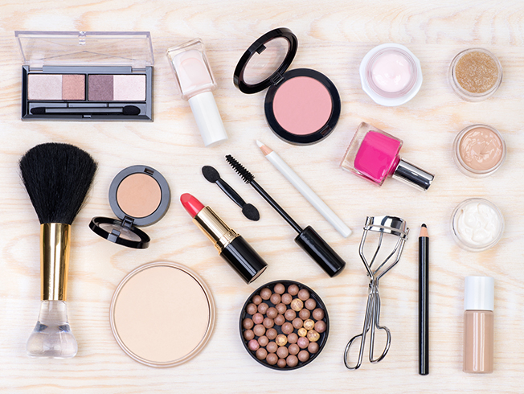
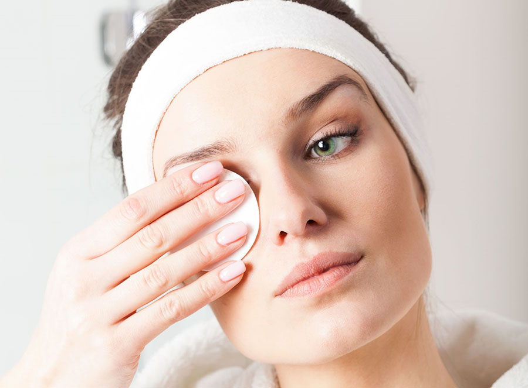
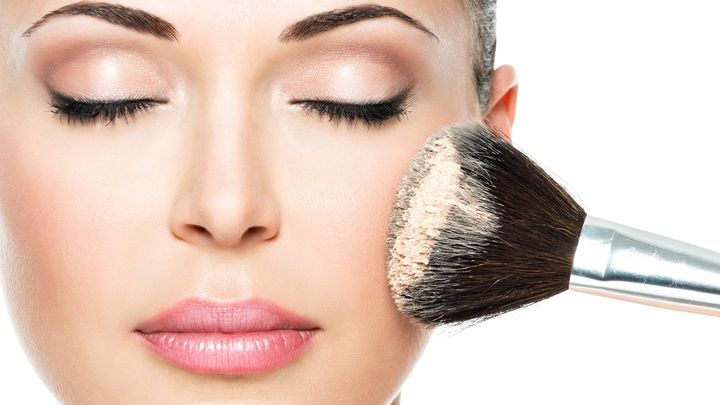
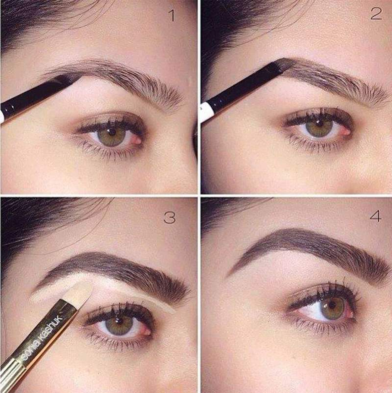
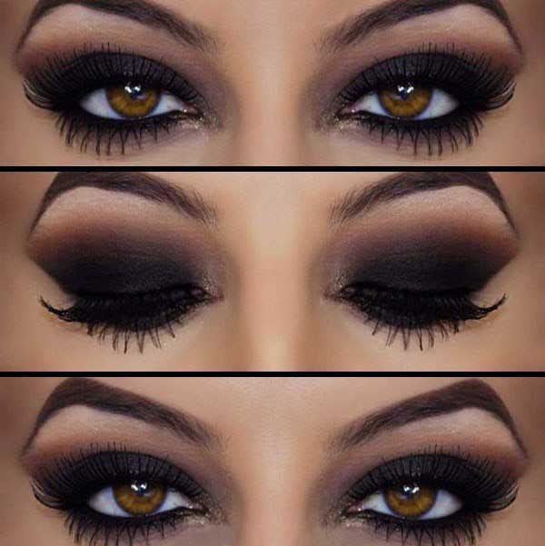
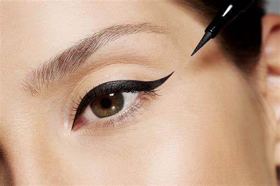
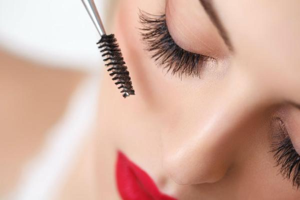
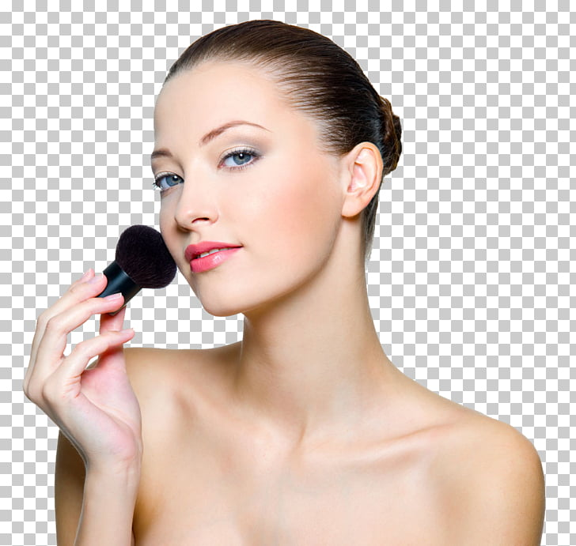
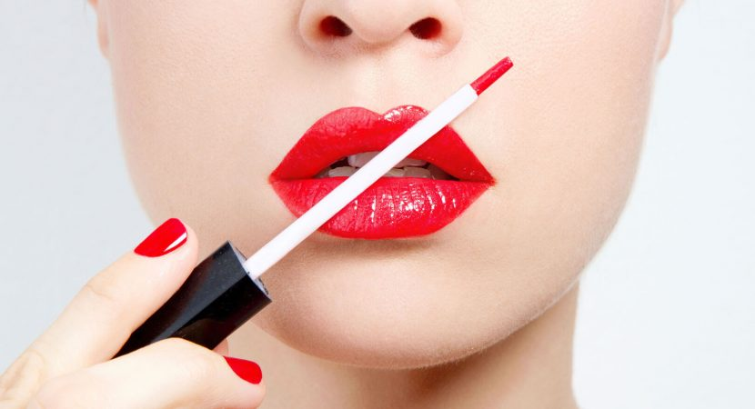

La elleccion del maquillaje
Escoge una base que encaje con tu tono de piel. Nunca elijas una sombra que sea mas clara o oscura que dos tonos de tu piel.

Limpia tu cara
Limpia tu rostro de los aceites naturales o de maquillajes que puedes tener en tus poros. Esto hará que tu maquillaje se asiente mejor y quede más natural.

La base del maquillaje
Aplica una base a todas las partes de tu rostro primero, homogeneizandola hasta tu cuello. Asegurate de que esta bien mezclada sobre tu piel.

Aplicacion
Aplica los polvos compactos finales con una brocha muy suave. La brocha conseguirá darte un look súper natural. Usa la brocha siempre con movimientos hacia abajo, nunca hacia arriba sino en tu maquillaje aparecerán como líneas.

Cejas
Unas cejas naturales solo necesitan un simple cepillado. Si es necesario agregar un poco de color, aplique el justo y necesario. Un lapiz blando es perfecto para dar color de forma natural. Si usas un lapiz duro, pintarás tu piel pero no los pelos de tus cejas. Para agregar un poco de sombra usa una brocha y usa muy poco color.

Maquillaje de ojos
En el caso de la sombra de ojos, elige un color que realce el color de tus ojos. Si el maquillaje es de tarde , intenta que case con el color de tu ropa. Usa al menos tres colores del mismo grupo de colores. Empieza por los parpados; aplica aquí el color mas claro, el color medio en el pliegue del parpado y el mas oscuro cerca de las cejas. Tambien aplica el maquillaje de ojos mas claro en las esquinas de donde esta aplicado el color mas oscuro. Cuando hayas terminado usa tu dedo y homogeneiza un poco la mezcla de colores.

Delineador de ojos
Usa un marron medio o un negro. Usa un delineador liquido. Se aplica mas suave y uniformemente. Aplicalo en la línea de agua, bajo tus pestañas. Usa toques largos para aplicar y asegurar que esta bien cerca de tus pestañas.

Pestañas
Usa un color marron o negro. Aplica la máscara con movimientos largos y hacia arriba (de la base hacia la punta de las pestañas). Deja que se secuencia y aplica una segunda capa. Puedes aplicar también una tercera capa. Entonces con un peine de pestañas, cepillalas un poquito para separar cada pestaña individualmente. Puedes usar también un rizador para dar a tus pestalas un look mejor.

Maquillaje de rubor
Esto es opcional pero muchas mujeres lo usamos para mejorar la línea de las mejillas. Usa un color rosa claro o el que quieras y usa una brocha suave. Empieza a dar el maquillaje desde la parte alta del hueso de tu mejilla y desde aquí hasta tus mejillas. Da color hasta cerca de tu nariz. Homogeneiza con tu brocha. Ten cuidado con hacerlo muy oscuro, un poco de maquillaje de rubor es suficiente.

Pintalabios
Escoge un color que se funda bien con tu maquillaje de rubor. Usa una sombra mas oscura que el liner, rellena con los pintalabios y cúbrelo con un buen brillo para darle efecto mojado. Los labios son fáciles de hacer. Nunca hagas efectos antinaturales en tus labios, solo puedes aplicar un poco de color y forro fuera de tus labios para que parezca un poco más grande. Si tienes lineas en tus labios, usa mas color y extiéndelo con una brocha para ocultar cualquier línea indeseada.
